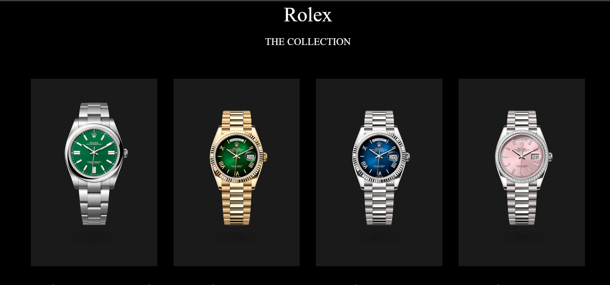

The website is divided into five parts:
| Watchly | Daraz |
|---|---|
|
Watchly uses a black and white theme for simplicity. It showcases products elegantly and focuses on Rolex and Richard Mille collections. |
Daraz uses vibrant orange for marketing. It offers a wide range of brands and has a more cluttered layout. Go to Daraz |
| Watchly | Alibaba |
|
Watchly has a clean design with an add-to-cart button but lacks a "like" feature. |
Alibaba has a similar design but includes a "like" feature and lacks an add-to-cart button. Go to Alibaba |
| Watchly | eBay |
|
Watchly has an elegant design with limited collection pieces. Photos are of high quality.  |
eBay has an elegant design with a wide range of watches, including Rolex. However, the image quality is not as good. Go to eBay |
| Watchly | Amazon |
|
Watchly has a simple and clean design with an add-to-cart button but lacks a price range filter. |
Amazon has a similar design with a price range filter and an add-to-cart button. Go to Amazon |